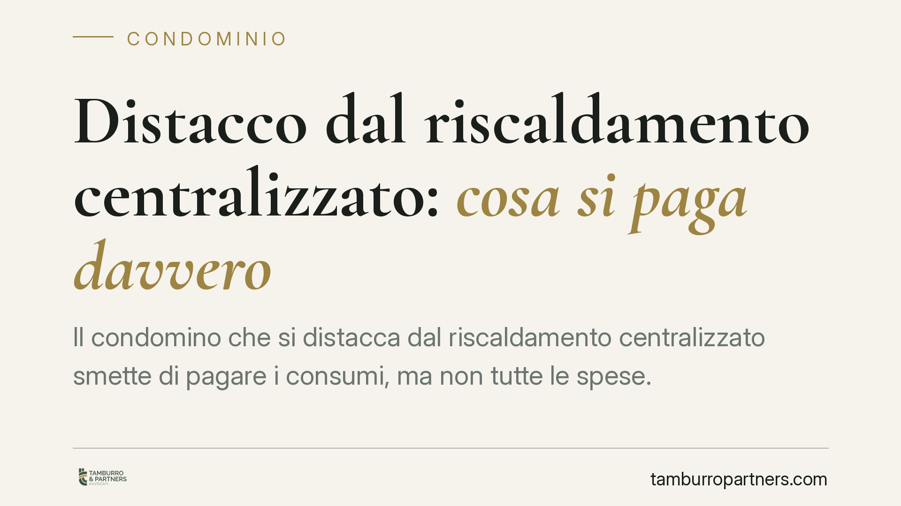

Distacco dal riscaldamento centralizzato: cosa si paga davvero
Il condomino che si distacca dal riscaldamento centralizzato smette di pagare i consumi, ma non tutte le spese. La Cassazione conferma l'obbligo di contribuire alla conservazione, alla manutenzione straordinaria e alla messa a norma dell'impianto comune. Capire la differenza tra consumo e conservazione è decisivo prima di valutare il distacco.

Il caso
Un condomino decide di staccarsi dall'impianto di riscaldamento centralizzato per dotarsi di un sistema autonomo. La domanda ricorrente è sempre la stessa: fino a che punto resta obbligato a pagare?
La giurisprudenza di legittimità, in linea con l'orientamento ormai consolidato delle Sezioni Unite del 2018, conferma una regola precisa. Il distacco libera dalle spese di consumo, ma non da quelle che riguardano l'impianto come bene comune.
*(Nota: gli estremi esatti della pronuncia più recente — Sezione e numero/anno — vanno verificati sulla fonte ufficiale prima di ogni utilizzo in atti o pareri.)*
Inquadramento normativo
La norma di riferimento è l'art. 1118, comma 4, c.c., introdotto dalla riforma del condominio del 2012. La disposizione consente al condomino di rinunciare all'utilizzo dell'impianto centralizzato di riscaldamento o condizionamento se dal suo distacco non derivano notevoli squilibri di funzionamento o aggravi di spesa per gli altri condomini.
Lo stesso comma, però, pone un limite netto: chi si distacca resta tenuto a concorrere al pagamento delle sole spese per la manutenzione straordinaria dell'impianto e per la sua conservazione e messa a norma. In altre parole, il condomino continua a essere comproprietario dell'impianto e, come tale, partecipa ai costi che ne garantiscono l'esistenza e la sicurezza.
Resta esclusa, invece, la partecipazione alle spese di consumo (combustibile, energia), che presuppongono un utilizzo che il distaccato non pone più in essere.
Consumo e conservazione: la distinzione che conta
La linea di confine è tutta qui.
- Spese di consumo (non dovute): il carburante, l'energia, la quota di gestione legata all'uso effettivo del calore.
- Spese di conservazione e manutenzione straordinaria (dovute): riparazioni strutturali, sostituzione della caldaia, interventi di adeguamento normativo e di sicurezza.
Un chiarimento necessario riguarda le dispersioni di calore. Non si tratta di una voce automaticamente addebitabile al distaccato. L'orientamento prevalente — che risale alle Sezioni Unite del 2018 — richiede la prova concreta che il distacco abbia generato un aggravio effettivo per gli altri condomini. In assenza di tale prova, nessun addebito a titolo di dispersione può essere imposto.
Il potere dell'assemblea di ripristinare l'impianto
Un secondo profilo rilevante riguarda la sorte dell'impianto quando l'assemblea ne abbia disposto, in passato, la dismissione.
L'assemblea conserva il potere di tornare sulle proprie decisioni e di ripristinare le parti dell'impianto ancora utili. Trattandosi di un intervento sul bene comune, la delibera va adottata con le maggioranze previste per la gestione dell'impianto e, laddove configuri una vera innovazione, con le maggioranze qualificate di cui all'art. 1120 c.c. in combinato con i quorum dell'art. 1136 c.c..
È un punto da non sottovalutare: chi conta su una dismissione come definitiva può trovarsi, legittimamente, di fronte a un impianto riattivato.
Implicazioni pratiche
Per chi valuta il distacco, il messaggio è chiaro: il risparmio non è integrale. L'uscita dai consumi non cancella l'obbligo di partecipare alla vita dell'impianto come bene comune.
Prima di procedere, consigliamo un calcolo realistico di convenienza. Al risparmio sui consumi vanno sottratti i costi dell'impianto autonomo (installazione, manutenzione, canne fumarie) e le quote che continueranno a gravare per conservazione, manutenzione straordinaria e messa a norma del centralizzato. In molti casi il margine effettivo è più ridotto di quanto appaia a prima vista.
Cosa fare in concreto
- Verifica la fattibilità tecnica. Fatti rilasciare da un tecnico abilitato una relazione che escluda notevoli squilibri di funzionamento e aggravi di spesa: è la condizione di legittimità del distacco ex art. 1118, c. 4, c.c.
- Comunica formalmente il distacco all'amministratore, conservando prova della data e del contenuto.
- Controlla il riparto. Pretendi che i rendiconti distinguano le spese di consumo (non a tuo carico) da quelle di conservazione e manutenzione straordinaria (a tuo carico).
- Impugna nei termini le delibere illegittime. Se l'assemblea ti addebita voci non dovute, la delibera può essere impugnata ai sensi dell'art. 1137 c.c. entro il termine perentorio di 30 giorni dalla deliberazione (o dalla comunicazione, per gli assenti).
- Documenta le dispersioni contestate. Se ti viene addebitato un aggravio da dispersione, chiedi la prova concreta: senza riscontro tecnico, l'addebito non regge.
---
Contributo informativo a cura di Tamburro & Partners Avvocati — Avv. Giuseppe Tamburro. Non costituisce parere legale.
Ogni condominio ha una storia a sé.
Se gestisci un'amministrazione e vuoi un confronto su una specifica questione condominiale, scrivi allo studio. Ti rispondiamo entro un giorno lavorativo.